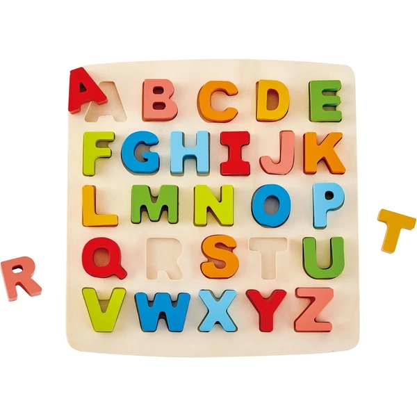
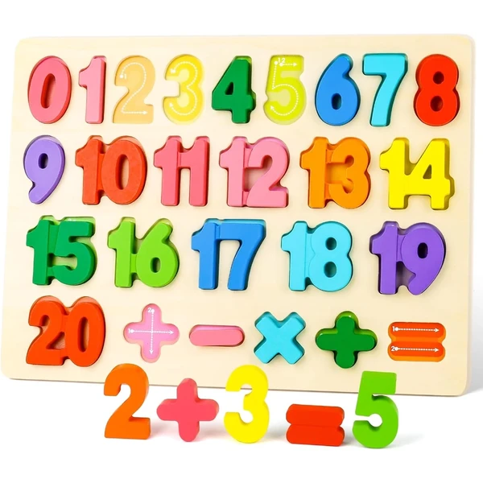
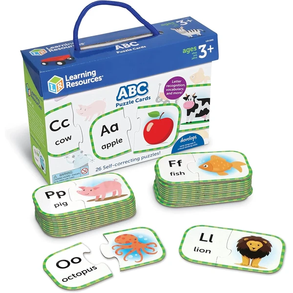
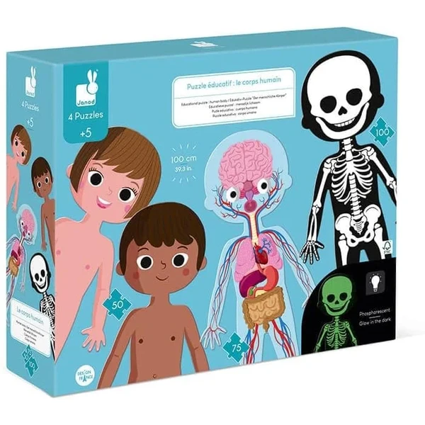
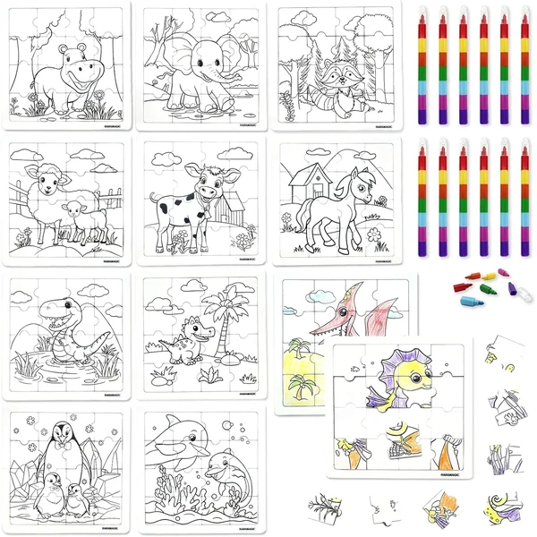
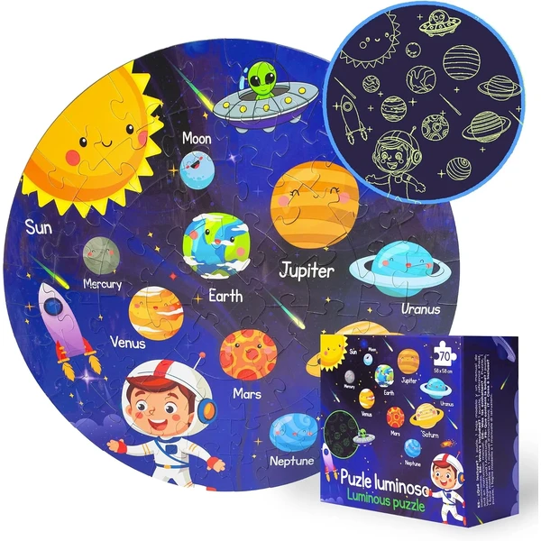
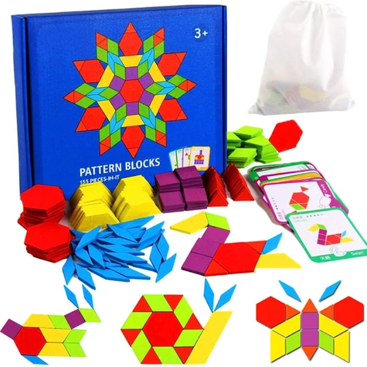

✨ Guía especial
Un puzzle educativo convierte el tiempo de juego en una oportunidad de aprendizaje, sin que el niño o la niña lo perciba como una tarea. A continuación tienes nuestra selección organizada por materia, para que encuentres justo el refuerzo que buscas: desde las primeras letras hasta el sistema solar.
Ideal para reforzar el reconocimiento de letras y la asociación con sonidos e imágenes en los primeros años de lectoescritura.

Abecedario Ver en Amazon →Trabaja el conteo, el reconocimiento numérico y las primeras operaciones básicas de forma manipulativa.

Número Ver en Amazon →Vocabulario básico en inglés integrado en la propia imagen del puzzle, útil como apoyo a las primeras clases del idioma.

Ingles Ver en Amazon →Introduce los órganos y sistemas principales del cuerpo de forma visual, muy usado también como recurso de aula.

Cuerpo Ver en Amazon →Un formato híbrido que combina el montaje del puzzle con la posibilidad de pintarlo después: primero se arma la figura y luego se decora con rotuladores o ceras, lo que añade una segunda fase de juego y refuerza la motricidad fina además de la creatividad. No es un puzzle "educativo" en el sentido estricto de la palabra, pero encaja perfectamente en esta guía por su enfoque de aprendizaje a través del juego.

Colorear Ver en Amazon →Planetas, órbitas y curiosidades del sistema solar en un formato visual muy atractivo para los más curiosos por la astronomía.

Espacio Ver en Amazon →Completan esta categoría otros puzzles con enfoque didáctico: figuras geométricas, el círculo cromático para introducir la teoría del color, el sistema circulatorio y otros contenidos de ciencias naturales. Pueden ser justo lo que buscas si el objetivo es reforzar una materia muy concreta.

Figuras Ver en Amazon →Muchos de estos diseños también existen en madera, un material especialmente valorado en el ámbito educativo por su resistencia al uso diario. Consulta nuestra guía de puzzles de madera.